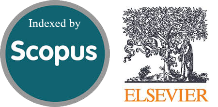

Publisher: CRC Press (Taylor & Francis) | Indexed: Scopus (Proposed)

This edited volume, Quantum Machine Learning in Practice: Frameworks, Applications, and Future Perspectives, aims to bridge the gap between theoretical advancements in quantum computing and their practical deployment in machine learning. With rapid progress in quantum technologies, there is a growing need to explore scalable frameworks, hybrid quantum-classical models, and domain-specific applications that leverage quantum advantage. This book brings together contributions from leading researchers and practitioners to present a comprehensive overview of emerging algorithms, tools, and real-world use cases across diverse sectors such as healthcare, finance, smart cities, cybersecurity, and scientific computing. It also addresses critical challenges, including data encoding, model evaluation, and hardware limitations, while highlighting ethical and societal implications. By integrating foundational concepts with applied research, this volume serves as a valuable resource for academics, industry professionals, and policymakers seeking to understand and advance the evolving landscape of Quantum Machine Learning.
Access detailed information including topics, submission guidelines, and important dates.
Download BrochureSubmit your abstract and author details using the link below.
Submit AbstractAssistant Professor, VIT, Vellore, India
Professor, SVCE, Sriperumbudur, India
Professor, VIT, Vellore, India
Abstract Submission Deadline: 20 April 2026
Dr. Arun Pandian J
Email: arunpandian.j@vit.ac.in
Phone: +91-8807813091